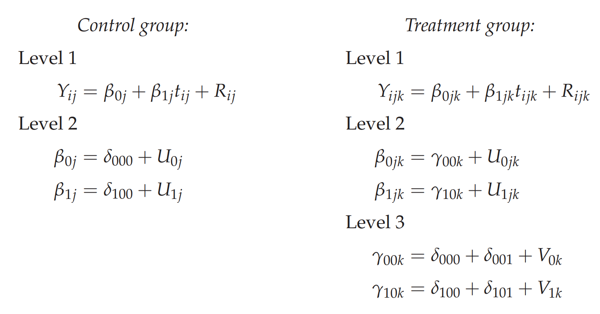
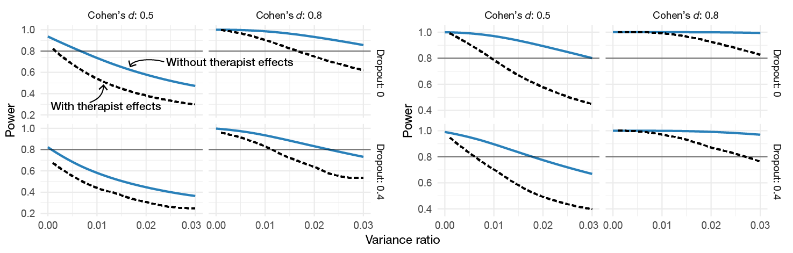
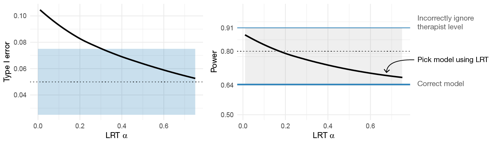
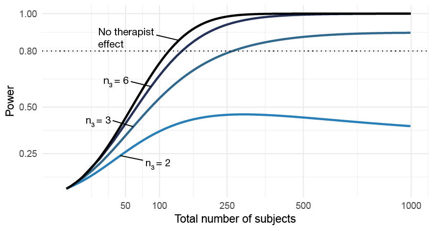
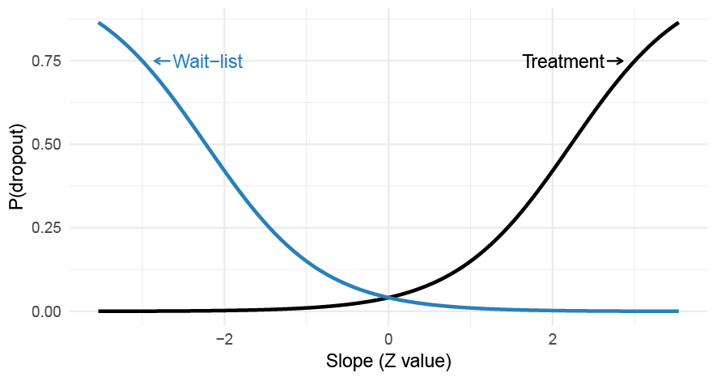
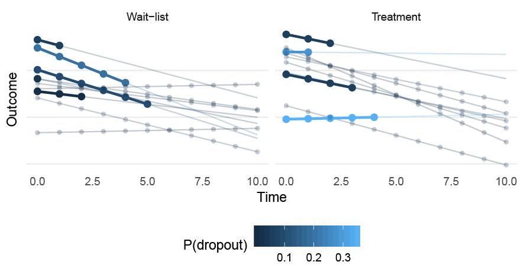
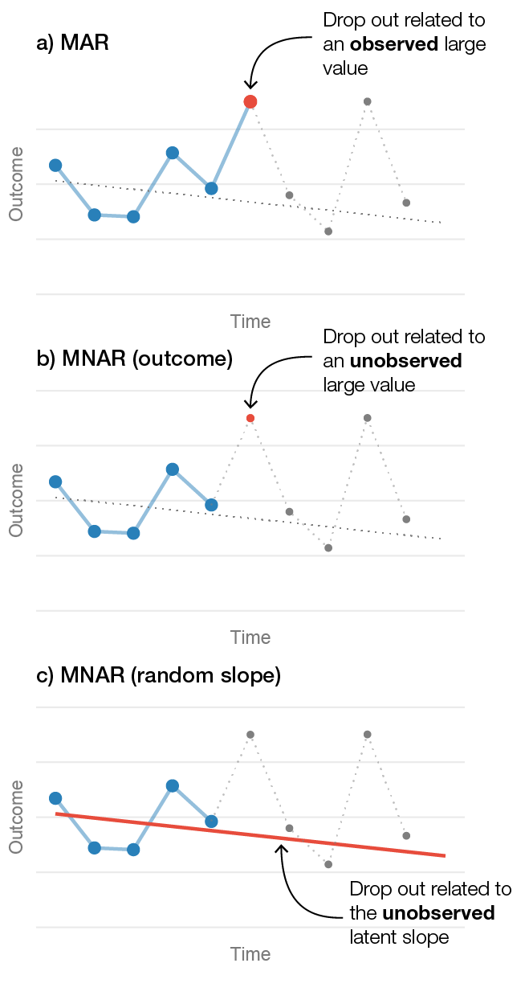
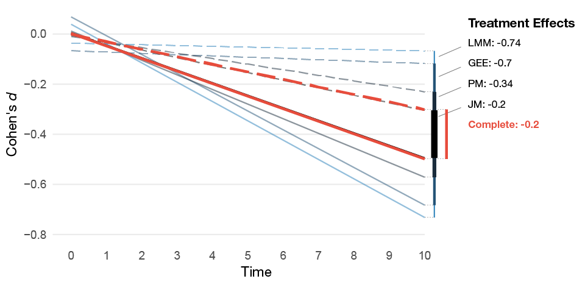

6 Empirical Studies
6.1 Details on the Methods Used
Before covering the individual studies in this thesis, I will first provide some further elaborations on the key methods used in these studies.
6.1.1 Monte Carlo Simulation Studies
Paper I and II use computer simulations to run experiments in order to evaluate statistical methods empirically. In short, a Monte Carlo study is performed by coding the DGP and drawing samples from it using a pseudo-random number generator. This creates simulated data sets from a known process. We can then use this to evaluate the performance of statistical methods, both the performance of a correct model and a misspecified model that deviates from the true DGP in some important way. For instance, if we generate 5000 data sets and fit a model to each data set, then we can check how many of the 5000 95% confidence intervals that include the true value. If the confidence intervals are valid, 95% (\(\pm\) Monte Carlo error) of them should include the true value. Monte Carlo studies are empirical experiments, and substantive knowledge is needed to design useful simulation experiments (Morris, White, and Crowther 2019; Burton et al. 2006).
6.1.2 Power Analysis
Sample size planning for two- and three-level LMMs is challenging, in anything but trivial models, multiple interacting factors impact power. For psychotherapy studies, the therapist level is a complicating factor since most studies only include very few therapists. For these designs, power is significantly impacted by the number of therapists. Moreover, when the study design is partially nested or when the number of subjects per therapist varies, the correct degrees of freedom must be approximated. In this section, I will give some concrete examples of the challenges as applied to Study IV. When the trial was planned power was based on a two-level random intercept and slopes model, and I partly developed the R package powerlmm to solve some of the challenges related to incorporating therapist effects and missing data in the power analysis.
The three-level partially nested model can be written as,

Where \(\delta_{101}\) gives the difference in change over time between the treatment and the control group. In addition, the patient-specific and therapist-specific random effects follow multivariate normal distributions, \[\begin{equation} \begin{pmatrix} U_{0jk} \\ U_{1jk} \end{pmatrix} \sim\mathcal{N} \left( \begin{array}{c} 0 \\ 0 \end{array} , \begin{matrix} \sigma_{u_0}^2 & \sigma_{u_{01}} \\ \sigma_{u_{01}} & \sigma_{u_{1}}^2 \end{matrix} \right) , \end{equation}\] and, \[\begin{equation} \begin{pmatrix} V_{0k} \\ V_{1k} \end{pmatrix} \sim\mathcal{N} \left( \begin{array}{c} 0 \\ 0 \end{array} , \begin{matrix} \sigma_{v_0}^2 & \sigma_{v_{01}} \\ \sigma_{v_{01}} & \sigma_{v_{1}}^2 \end{matrix} \right) , \end{equation}\] and the within-patient residuals are, \(R_{ijk} \sim\mathcal{N}(0, ~\sigma^2_e)\).
Power will depend greatly on the relative size of the variance components. Two important ratios are the “variance ratio”, \((\sigma_{u1}^2 + \sigma_{v1}^2)/\sigma_e^2\), as well as the amount of variance in change over time attributed to the therapist level (the “therapist effect”), \(\sigma_{v1}^2/(\sigma_{u1}^2 + \sigma_{v1}^2)\). The technical details of the calculations are covered in Magnusson (2018), and in powerlmm’s vignettes. Figure 6.1 shows the power curves for both the achieved and planned for sample size in Study IV. We see that with the achieved sample size the statistical test will have rather low sensitivity assuming that the true effect would be d = 0.5, unless the random slope variance is small compared to the within-subject residual variance.

Figure 6.1: Power as a function of the variance ratio for different effect sizes and amounts of dropout (proportion of dropout at the last time point). The calculations are based on the realized sample size (100 participants, unbalanced allocation to therapists) and 7 time points. The dashed curved shows power when 5% of the slope variance is at the therapist level.
As there is a possibly large difference in power under the assumption of a two-level or three-level model, one might be tempted to use a likelihood ratio test (LRT) to rule out any therapist effects. Figure 6.2 shows that the likelihood ratio test does not automatically keep the type I error at correct levels.3 There is always a balance between type I errors and power, as the LRT \(\alpha\) is increased both power and type I errors moves towards the three-level model that always accounts for therapist effects. Moreover, the comparison is skewed towards the two-level model since we are effectively accepting a larger \(\alpha\) level. The difference is even less pronounced if we set \(\alpha = 0.075\) for the three-level model. If investigators are willing the increase the risk of committing a type I error in order to reduce the risk of a type II error, then the more principled way of achieving this would be to increase \(\alpha\) together with using a three-level model. The problem with using the two-level model is that the actual \(\alpha\) level depends on unknown factors, such as the between-therapist variance in change over time. The problem with the three-level model is that power depends a lot on the number of therapists. Thus, from a planning point of view, it might be hard to design studies with a reasonable chance of detecting clinically relevant effects. Figure 6.3 shows that just adding more participants does very little to increase power; the number of therapists will have a much larger impact on power than the total number of subjects.

Figure 6.2: The impact of using LRT model selection to decide if therapist effects should be accounted for. Impact of the LRT’s \(\alpha\)-level is shown on both the type I errors and power.

Figure 6.3: The impact of the number of therapists on power as a function of the total sample size. The curve labeled No therapist effect shows power assuming a two-level model with no therapist-level random slope variance.
Generally, both dropout and the number of subjects per therapist will be unknown, and we must use some approximation to decide how sensitive we want our test to be given a reasonable level of therapist imbalance and missing data.
6.1.3 Missing Data Considerations
Psychological treatments are delivered over repeated sessions, and patients are generally followed-up for 6 to 12 months after treatment completion—making missing data practically unavoidable. This is probably the main reason for the popularity of longitudinal data analysis via linear mixed-effects models in clinical psychology.
Rubin (1976) presented three types of missing data mechanisms: missing completely at random (MCAR), missing at random (MAR), missing not at random (MNAR). LMMs provide unbiased estimates under MAR missingness; however, it is not entirely clear that assuming MAR is completely justified. I will, therefore, present a simple example of when the LMM fails and illustrate some of the sensitivity analyses used in Study IV.

Figure 6.4: A differential MNAR dropout process where the probability of dropping out from a trial depends on the patient-specific slopes which interact with the treatment allocation. The probability of dropout is assumed to be constant over time.

Figure 6.5: A sample of patients drawn from the MNAR (random slope) data-generating process. Circles represent complete observations; the bold line represents the slope before dropping out. P(dropout) gives the probability of dropout, which is assumed to be constant at all time points.
Simplified, if we have the complete outcome variable \(Y\) (which is made up of the observed data \(Y_{obs}\) and the missing values \(Y_{miss}\)) and a missing data indicator \(R\) (Rubin 1976; Little and Rubin 2014; Schafer and Graham 2002), then we can write the MCAR and MAR mechanisms as, \[\begin{align} \begin{split} \text{MCAR}:\quad \text{P}(R \mid Y) &= \text{P}(R) \\ \text{MAR}:\quad \text{P}(R \mid Y) &= \text{P}(R \mid Y_{obs}). \end{split} \end{align}\] If the missingness depends on \(Y_{miss}\), the missing values in \(Y\), then the mechanism is MNAR. MCAR and MAR are called ignorable because the precise model describing the missing data process is not needed. In theory, valid inference under MNAR missingness requires specifying a joint distribution for both the data and the missingness mechanisms (Little 1995). There are no ways to test if the missing data are MAR or MNAR (Molenberghs et al. 2008; Rhoads 2012), and it is therefore recommended to perform sensitivity analyses using different MNAR mechanisms (Schafer and Graham 2002; Little 1995; Hedeker and Gibbons 1997).
6.1.3.1 An Empirical Example of MAR vs. MNAR Missing Data
LMMs are frequently used by researchers to deal with missing data problems in psychotherapy trials. However, in my opinion, researchers frequently misunderstand the MAR assumption and fail to build a model that would make the assumption more plausible. Sometimes you even see researchers using tests, e.g., Little’s MCAR test, to prove that the missing data mechanisms is either MCAR or MAR and hence ignorable. Naturally, as stated earlier, such a conclusion is a clear misunderstanding and builds on faulty logic.
Another common misunderstanding is that LMMs yield unbiased estimates if the dropout is related to the patient-specific slopes (i.e., the random effects). Clearly, it would be practical if the inclusion of random slopes would allow missingness to depend on patients’ latent change over time. Unfortunately, the random effects are latent variables and not observed—hence, such a missingness mechanism would also be MNAR (Little 1995). Figure 6.6 illustrates the MAR, outcome-based MNAR, and random coefficient-based MNAR mechanisms. In my experience, psychotherapy researchers tend to include quite few prognostic covariates in their models, or variables that are thought to be related to the missingness. Thus, most LMMs (that are used to deal with missing data) make the assumption that missingness only depends on the previously observed values of the outcome. This is quite a strong assumption.
To illustrate these concepts I generated data from a two-level LMM with random intercept and slopes, and included a MNAR missing data mechanism where the likelihood of dropping out depended on the patient-specific random slopes. Moreover, the missingess differed between the treatment and control group. Figure 6.4 and 6.5 illustrate the dropout mechanism, which are based on the following equations, \[\begin{align} \begin{split} \text{logit}(\text{Pr}(R_{ij} = 1 | TX_{ij} = 1)) &= -\sigma_{u_{1}} + \text{logit}(0.15) + U_{1j} \\ \text{logit}(\text{Pr}(R_{ij} = 1 | TX_{ij} = 0)) &= -\sigma_{u_{1}} + \text{logit}(0.15) -U_{1j}. \end{split} \end{align}\]

Figure 6.6: Three different drop out mechanisms in longitudinal data from one patient. a) Illustrates a MAR mechanism where the patient’s likelihood of dropping out is related to an observed large value. b) Shows an outcome-related MNAR mechanism, where dropout is related to a large unobserved value. c) Shows a random-slope MNAR mechanism where the likelihood of dropping out is related to the patient’s unobserved slope.
To show the consequences of this random-slope dependent MNAR scenario under different models, I performed a small simulation. The study had 11 time points, 150 participants per group, the variance ratio was 0.02, the pretest ICC was 0.6, with a correlation between intercept and slopes of -0.5, and there was a small effect in favor of the treatment of \(d = -0.2\). Five different models was compared:
- LMM (MAR): a classical LMM assuming that the dropout was MAR.
- GEE: a generalized estimating equation model.
- LMM (PM): an LMM using a pattern-mixture approach. Two patterns were used; either “dropout” or “completer”, and the results were averaged over the two patterns.
- JM: A joint model that correctly allowed the dropout to be related to the random slopes.
- LMM with complete data: an LMM fit to the complete data without any missingness.
Table 6.1 shows the results, and Figure 6.7 shows how much the treatment effects differ. We can see that LMMs are badly biased under this missing data scenario; the treatment effect is much larger then it should be (Cohen’s d: -0.7 vs. -0.2). The pattern-mixture approach improves the situation, and the joint model recovers the true effect. Since the sample size is large, the bias under the MAR assumption leads to the LMM’s CIs having extremely bad coverage. Moreover, under the assumption of no treatment effect the MAR LMM’s type I errors are very high (83%), whereas the pattern-mixture and joint model are closer to the nominal levels.
| Model | Est. | Rel. bias | d | Power | CI coverage | Type I error |
|---|---|---|---|---|---|---|
| LMM (MAR) | -11.84 | 274.38 | -0.74 | 1.00 | 0.02 | 0.83 |
| GEE | -11.19 | 253.98 | -0.70 | 1.00 | 0.06 | 0.71 |
| LMM (PM) | -5.39 | 70.47 | -0.34 | 0.64 | 0.84 | 0.10 |
| JM | -3.18 | 0.6 | -0.20 | 0.28 | 0.93 | 0.07 |
| LMM (complete) | -3.21 | 1.44 | -0.20 | 0.38 | 0.95 | 0.05 |
| Note. MAR = missing at random; LMM = linear mixed-effects model; GEE = generalized estimating equation; JM = joint model; PM = pattern mixture; Est. = mean of the estimated effects; Rel. bias = relative bias of Est.; d = mean of the Cohen’s d estimates. |

Figure 6.7: Mean of the estimated treatment effect from the MNAR missing data simulations for the different models. The dashed lines represents the control group’s estimated average slope and the solid lines the treatment group’s average slope.
This simulation example is purposely quite extreme. However, even if the MNAR mechanism would be weaker, the LMM will yield biased estimates of the treatment effect. The assumption that dropout might be related to patients’ unobserved slopes is not unreasonable. However, fitting a joint model is often not feasible as we do not know the true missingness mechanism. I included it just to illustrate what is required to avoid bias under a MNAR mechanism. In reality, the patients’ likelihood of dropping out is likely an inseparable mix of various degrees of MCAR, MAR, and MNAR mechanisms. The only sure way of avoiding bias would be to try to acquire data from all participants—and when that fails, perform sensitivity analyses using reasonable assumptions of the missingness mechanisms.
6.2 Study I: “The Consequences of Ignoring Therapist Effects in Longitudinal Data”
In Study I, we investigated the consequences of ignoring therapist effects in longitudinal data analysis. We also performed a small review of all the trials published in the Journal of Consulting and Clinical Psychology from 2008 to 2018, which showed that virtually no investigators accounted for the possibility that therapists might differ in their effectiveness.
We present what factors influence type I errors when ignoring therapist effects and also report the results from a large simulation study.
6.2.1 Methods
We first analytically derived what factors would impact the Type I errors when ignoring therapist effects, which were: the number of time points, the number of subjects per therapist, the amount of heterogeneity in change over time, and the amount of the total slope-variance at the therapist level. We then carried out a factorial experiment where these factors were manipulated, and in addition, we also manipulated the amount of imbalance in the number of subjects per therapist, compared full versus partial nesting and the impact of missing data. In total, there were 1,584 different conditions evaluated.
6.2.2 Results
The empirical simulation results validated the analytical results, and showed that even when 5% of the variance in slopes is at the therapist level, the type I errors can be substantially inflated. The simulations also revealed that unbalanced allocation of patients to the therapists can have a large impact of the type I errors, when the therapist level is ignored.
6.2.3 Conclusions
Potential therapist effects can have a substantial impact on the type I errors and yield highly unreliable results. When analyzing data from longitudinal studies, investigators should account for the possibility that therapists might have different overall slopes over time. In an LMM, this can be accounted for by including a random slope at the therapist level.
6.3 Study II: “Modeling Longitudinal Gambling Data: Challenges and Opportunities”
Gambling expenditure is a common outcome in gambling research, and it is recommended as a treatment outcome in the Banff consensus statement (Walker et al. 2006). However, analyzing gambling expenditure poses many challenges. Not only is the outcome highly skewed with some participants losing a small amount of money and some very large amounts—if the treatment is successful there will also be a large proportion of reports that are zero.
6.3.1 Methods
We used data from a recent RCT comparing two behavioral interventions aimed at problem gamblers (Nilsson et al. 2016), to highlight the issues and show that our proposed model can be a more attractive option. We also reviewed 69 published articles to understand better how authors tend to deal with the problem. The review showed that the problem is well recognized and that researchers try to deal with the problem mostly by log transforming the outcome (most likely a \(\text{log}(y+1)\) transformation when the outcome include zeros), or continue with a standard analysis based on a normally distributed residuals. Furthermore, we compared the performance of the proposed two-part model to the typical methods used by investigators: a linear mixed-effects model with or without a \(\text{log}(y+1)\) transformation. The performance of these models was compared using different Monte Carlo simulation scenarios. The choice of an appropriate estimand for treatment effects was also discussed, where we argue that gambling researchers should primarily be concerned with the overall reduction in gambling losses.
6.3.2 Results
In general, the classical LMM with our without a \(\text{log}(y+1)\) transformation were both biased and substantially less efficient (i.e., had less power) compared to the two-part model. The \(\text{log}(y+1)\) transformation performed worse when the proportion of zeros differed between treatment arms—which badly biased the results in some scenarios and even obscured a large overall reduction in gambling losses.
6.3.3 Conclusions
The marginalized two-part model is an attractive option to model gambling losses as a treatment outcome. Under the assumptions that gambling losses are semicontinuous, and that the conditionally positive losses follow a gamma distribution the proposed two-part model is superior to or equal to the other models as measured by either the CI’s coverage probabilities, power, bias, and root-mean-square error (RMSE).
6.4 Study III: “Level of Agreement Between Problem Gamblers’ and Collaterals’ Reports”
In Study III, we investigated the level of agreement between problem gamblers and their CSOs. We also demonstrated the utility of the two-part model when calculating ICCs as compared to the Gaussian LMM.
6.4.1 Methods
The sample consisted of problem gamblers and their CSOs participating in a trial comparing individual CBT versus behavioral couples therapy (Nilsson et al. 2016). A total of 133 dyads were included, and we used their baseline reports of gambling losses using the timeline followback covering the last 30-days. We used a two-part model with a dyad-level random intercept and compared both a lognormal and gamma response distribution. The level of agreement was estimated using the intraclass correlation coefficient (ICC). We also compared whether the level of agreement differed as a function of the type of CSO (parent, partner, or other).
6.4.2 Results
Overall there was a fair-level of agreement, ICC = .57, 95% CI [.48, .64]. There were some evidence that partner CSOs had a higher level of agreement compared to parent CSOs, \(\text{ICC}_{diff}\) = .20, 95% CI [.03, .39].
6.4.3 Conclusions
In this study, we show two things: First, in this type of population, CSOs and problem gamblers are fairly in agreement regarding the amount of money lost. Second, ICCs calculated using the Gaussian LMM are highly unreliable, and the nature of gambling losses make the normal assumptions highly unlikely to hold. A small simulation study both validated the two-part model, and further showed that the Gaussian model resulted in biased ICC estimates under assumptions relevant to our study. Thus, even if the ICCs are more complicated to calculate using the two-part GLMM, it can be worth the trouble since its estimates are more precise, less biased, and more informative.
6.5 Study IV: “Internet-delivered Cognitive-behavioral Therapy for Concerned Significant Others of People with Problem gambling”
In Study IV, we investigated the efficacy of an Internet-delivered CBT program for CSOs of treatment refusing problem gamblers. This study use the findings from Study I, II, and III: 1) we adjusted for therapist effects, 2) used the CSOs reports of their loved one’s gambling losses 3) and used the two-part model to analyze the longitudinal reports of gambling losses.
6.5.1 Methods
In total, 100 CSOs of treatment-refusing problem gamblers were randomized to either ten weeks of ICBT or a waitlist control. The primary analysis assumed a MAR missing data mechanism; however, we performed sensitivity analyses using both pattern-mixture methods and multilevel multiple imputation. We tried to estimate the causal effect of adhering to the intervention by using data on the number of completed worksheets and the time spent on the online treatment modules.
This trial was prospectively registered with clinicaltrials.gov (NCT02250586), and a study protocol with a more detailed description of the trials is published open access (Magnusson et al. 2015).
For transparency and for better pooling of data, we also published the raw data, including all measured outcomes together with the R scripts used to analyze the trial. The data and scripts can be downloaded from https://osf.io/awtg7.
6.5.2 Results
At posttest the intervention group reported an improvement on the CSO’s emotional consequences (d = -0.90, 95% CI [-1.47, -0.33]), relationship satisfaction (d = 0.41, 95% [0.05, 0.76]), anxiety (d = -0.45, 95% [-0.81, -0.09]), depression (d = -0.49, 95% [-0.82, -0.16]). Any effects on the CSO’s reports of gambling losses and treatment-seeking were inconclusive.
6.5.3 Conclusions
Problem gamblers are hard to influence via their CSO proxies; however, the intervention had a clinically meaningful effect of the CSO’s coping as measured by their emotional consequences, anxiety, depression, and relationship satisfaction. It also seems like that there was a dose-response effect, where participants that engaged more with the intervention benefited more.
This example is adapted from one of my blog posts: https://rpsychologist.com/do-you-need-multilevel-powerlmm-0-4-0↩